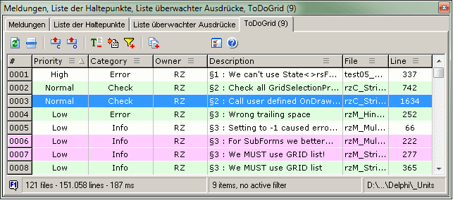

ToDo GridGeneral |
  
|
ToDo GridGeneral |
|
this page .. |
see also .. |
|---|---|
General |
|
|
|
|
|
|
|
|
|
|
|
|
ToDo Grid Expert is not yet available in GExperts |
Overview |
|
The "ToDo Grid" expert offers a great overview of all ToDo items that are present in your source code. The expert has a dockable main window; this mode should also be the primary form of use. Disadvantage of the dockable window is, that only a small amount of rows from the data grid is visible. To compensate for this limitation, a second, large and freely movable window can be opened which can displays the data grid with a significantly larger number of rows.
The extended functionality complements the to do function available in the IDE and offers new ways to keep a good overview by sorting, filtering and temporarily highlighting the data. This expert follows the well-known "To Do List" in many respects, but expands it with new features and expanded display options through the use of a string grid. The increased flexibility, especially in configuration, significantly improves adaptation to individual work situations.
Notice |
▪The application does not monitor the files. If the files have been modified, it is the user's decision to manually initiate a new file scan. |
|
▪If you have added new ToDo to the source, but they are not listed in the string grid: Please note that only saved changes are taken into account during the scan! |
|
▪Users of older IDE versions that do not save bookmarks can use "ToDo Grid" as an alternative bookmark expert by defining a special "Jump Token". |
|
▪Unfortunately, due to system constraints, the experts help cannot be called with F1 in docked windows. If a dockable window is currently undocked, the F1 key can be used. |

Basic functionalities |
|
Both forms (DockForm and FreeForm) offer the same functionalities for controlling and using the grid. The basic functionalities are presented in the order of the buttons provided for them:
Data scan |
The button or the keyboard shortcut F5 you can rescan the files at any time according to the selection of tokens defined in the configuration. A data scan removes both the highlight filter and the column filter. The previous sort, individual column sizes or column visibility are not affected by the scan. Detailed information about the structure of the tokens considered by the scan and the various ways of placing them in the source code can be found on the help page "Rules of syntax analysis". If both forms are visible, a physical scan is performed only on the active form; the data in the inactive form is not automatically updated. If this data should also be updated, a rescan must be initiated in this form as well. By the way: When the FreeForm is opened, no current scan is performed; for speed reasons, the data from the DockForm is copied into the string grid of the FreeForm. |
|
Goto source line |
With this button or the keyboard shortcut Return you can jump to the source code row which ist selected in the grid. If necessary, the file will be opened in the editor. Depending on the currently valid search path, sometimes an error message may be displayed when opening the file. This is harmless as long as the IDE doesn't remove components from the opened form. Therefore, you should make sure that the file isn't saved. If the line position in the source was changed after the last scan, an attempt will still be made to bring the correct line into the visible area. In this case, the application will ask whether the row number in the grid should be adjusted. If the token position cannot be found at all, the program abort jumping. |
|
|
Hide / show "Category" and "Owner" |
With the buttons you can hide and show the columns "Category". If a column filter is set, the visibility state of this column cannot be changed. Data scan does not change the visibility of the columns. The status is saved and restored separately for the grids in the DockForm and the FreeForm. |
|
Show / hide token |
After pressing the button the "Description" column will additionally show or hide the "Token" in front of the description. In the configuration, you can specify whether the "Token" is taken into account when sorting the "Description" column. |
Add grid items to message view |
Pressing the button copies the current string grid rows to the IDE message view. The copy takes into account the current sorting and any filters. Before the copy is carried out, you will be asked whether you want to delete the current contents of the IDE message view. The structure of the copied data rows is currently not configurable. |
|
|
Show / close undocked grid form |
Clicking this button you can show and hide the FreeForm as a large and freely movable window. This grid is preferred when a larger number of rows need to be viewed clearly. Size and position of the form are saved and restored when called again. To close the undocked grid form you can press the button in the DockForm or in the FreeForm. |
Options |
The button opens the configuration form. The form offers comprehensive options for adapting the expert’s settings and behavior to individual requirements. Of particular note, however, are the settings that control the scan because they influence the run time requirements significantly. Detailed information can be found on the help page "Configuration (Options)". |
|
Help |
Pressing this button opens the help (this page). |
Using the string grid |
|
Both forms (DockForm and FreeForm) offer the same functionalities for controlling and using the string grid:
Select rows + Move selection |
|
Only a single row can be selected in the grid; multi-selection or extended-selection is not available. The selection can be moved using the usual keys or the mouse wheel.
The behavior of the mouse wheel is configurable: By default the row selection can be moved directly with the mouse wheel. To move the area marker in the scroll bar, you must hold down the Shift key additionally. In the opposite case, the area marker in the scroll bar is moved directly with the mouse wheel; to move the row selection, hold down the Shift key additionally.
Highlight rows |
|
Double-clicking on a fixed cell in the first column of a row colors the entire row in a configurable color. The highlight status isn't saved beyond runtime and will be overwritten by a scan - nevertheless, the functionality is very useful for temporarily marking any selection of rows.
Notice |
▪Highlighted rows can be filtered (see "Filter grid"). |
|
▪When the FreeForm is opened, highlight attributes set in the DockForm are applied once. Changes made in the FreeForm are not subsequently transferred to the DockForm. |
|
▪While the highlight filter is active, the row status cannot be changed. |
|
▪The row highlighting is removed by a data scan. |
Sort grid |
|
All columns of the grid, with the exception of the row index column, can be sorted individually by clicking in the right area of the fixed cell in the top row. If the column is currently the primary sorted column, a triangle symbol appears there; the orientation of the triangle indicates the sorting direction (column is sorted up) and (column is sorted down).
Notice |
▪Typically, sorting is performed across multiple columns. |
|
▪Only the elements of the sorted column correspond to the selected sorting direction; columns sorted below are always sorted in ascending order. |
|
▪The elements in the columns "Priority" and "Category" are not sorted alphabetically, but rather by the relevance of the attributes. For example, "Error" is more important than "Check" and is therefore sorted before "Check." A good overview of the sort order can be found in the combo boxes in the options. |
|
▪When sorting the "Description" column, the optionally displayed token is only taken into account if this is set in the configuration. |
|
▪After data scan the previous sort will be restored. |
Filter grid |
|
Column filter - All columns of the grid, with the exception of the row index column, can be filtered individually by clicking on the symbol in the column header. You can activate multiple column filters at the same time; the filter works additively, i.e. each subordinate filter reduces the result set of the parent filter. If the filter for the column is active, the symbol is displayed. Right-clicking on any red (active) symbol resets the filter; a multi-level filter is always reset step by step in the reverse order of activation.
Highlight filter - If there are highlighted rows, they can be filtered using the button placed above the grid. An active highlight filter is indicated by the button; the filter can be reset by clicking the button.
Notice |
▪The "Category" or "Owner" column cannot be hidden when filtered by the column filter. |
|
▪Column filter and highlight filter cannot be activated at the same time. |
|
▪Filters are not transferred to the siblings form grid, so the data can be viewed independently. |
|
▪Data scan resets both filters. |
Adjust column width |
|
The width of the columns "Description" and "File" can be changed by the user. The action is started by pressing the left mouse button over the dividing line in the top row between the two columns; while holding the mouse button down, the width of both columns can be adjusted within specified limits.
Notice |
▪The column widths in the DockForm are always preset to a fixed ratio of 3 : 1 |
|
▪The column widths in the FreeForm are preset in a ratio of 3 : 1 when first called; after that, the last widths set by the user are restored. |
|
▪Only the columns "Description" and "File" are sizable; the width of other columns cannot be changed. |
Hide columns |
|
see "Basic functionalities"